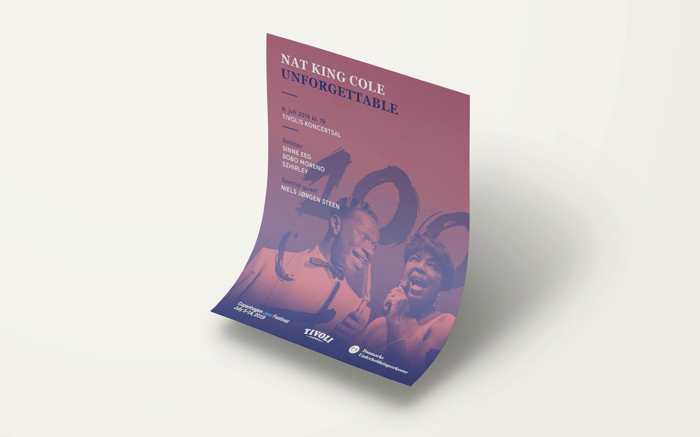

Lisa Grünwaldt
Work
About
Contact
EN
The Danish Chamber Orchestra
Focus
design, photopgraphy,
In 2014 the DR Danish Chamber Orchestra had their 75th anniversary. However, 2014 also became the year in which DR decided to close the orchestra for budget reasons.
Strong forces in the Danish music and business world took the initiative to let the orchestra continue as a musician owned orchestra. It has been crucial to the project’s artistic quality that the musicians in the original orchestra are still dedicated to the idea. Along with our Principal conductor Ádám Fischer and conductor David Firman, the musicians themselves have taken responsibility for the project. In 2015 a professional management and board were appointed, and the orchestra became The Danish Chamber Orchestra.
Since the beginning of 2019 I am working as a graphic designer for the orchestra. I am mainly responsible for the visual identity including Social Media campaigns, print products and photography.

Tour 2019